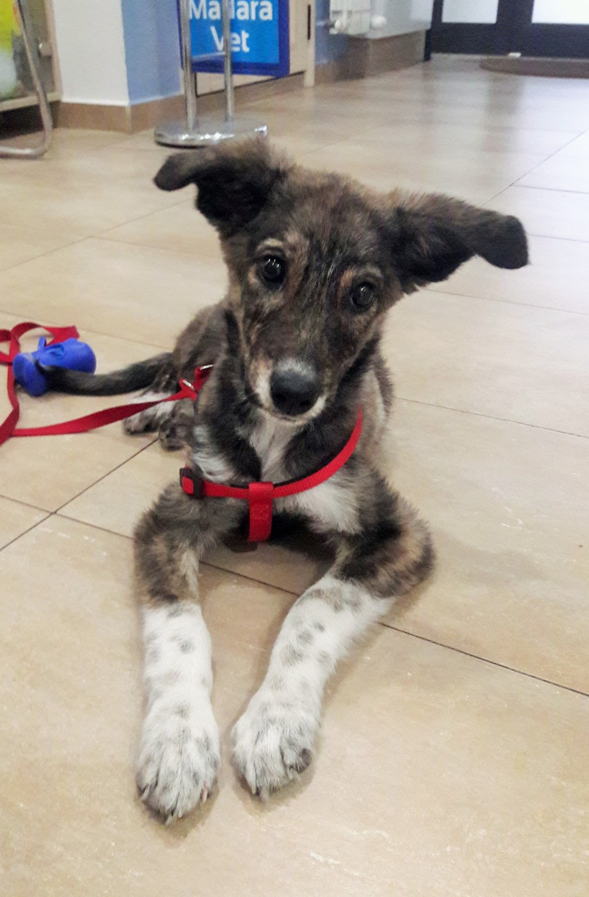

Заразната кучешка кашлица или инфекциозен трахео-бронхит се разпространява целогодишно, но най-вече през по-хладните месеци. Заболяването се причинява от комбинация от вируси (параинфлуенца, адено- и херпес вирус) и бактерии (бордетела) и е силно заразно при контакт с болно куче.
Симптомите са силна „лаеща“ кашлица, която може да е на пристъпи и да доведе до повръщане. Много често стопаните водят домашния си любимец в клиниката, притеснявайки се, че е погълнал чуждо тяло и затова се дави и кашля.
Общото състояние на кучето може да е добро въпреки инфекцията, но е препоръчително, ако при подрастващо или възрастно и иначе здраво куче кашлицата се задълбочи или продължи повече от десет дни, да се консултира ветеринарен лекар. Той ще назначи адекватна антибиотична терапия за да се избегнат усложнения като пневмония.
Ако кучето ви е заразено, може да му помогнете като не го натоварвате с прекалено дълги разходки (особено неприятно в такава ситуация е притискането на трахеята при дърпане на нашийника чрез повода – това предизвиква рефлекторен пристъп на кашлица). Също добър ефект има подсилването на имунитета посредством качествена храна, имуностимуланти и мултивитаминни препарати. За облекчаване на кашлицата може да бъде предписан подходящ сироп. Препоръчително е да не се събират болни кучета с други в този период поради големия риск от заразяване!
Инфекцията и симптомите обикновено отшумяват в рамките на 2-3 седмици, което е важна информация за стопаните, тъй като оздравителният процес е по-продължителен в сравнение с други вирусни заболявания.
Съществува ваксина срещу част от причинителите на кучешката кашлица, която се впръсква еднократно върху носната лигавица на кучето и създава едногодишен имунитет. Ваксината може да се постави целогодишно,като най-често това става през есента. Куче, което е ваксинирано, може в дадени случаи да се зарази с болестта, но тя ще протече в много по-лека форма, отколкото ако не е ваксинирано.
{kind=link}